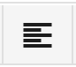
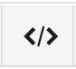
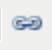

The Research Catalogue is at https://www.researchcatalogue.net
Either login or register for an account.
If you are student or staff at an affiliated portal partner (list, you can get your account by requesting it directly at your local portal admin.
If you are an independent researcher, you have to send in a signed terms of use and proof of identity to the Research Catalogue support, see: http://www.researchcatalogue.net/portal/register
If you ever have lose your password, try https://www.researchcatalogue.net/portal/forgotten-password.
After logging in, click on my profile and edit profile to enter or update your personal data.
Click on at the bottom of the profile page to create a new research exposition. A form will where you can choose your editor:
This guide will work with the graphical editor so choose that, and click . For more info on the text based editor, see the docs.
You will also need to provide a title, copyright and abstract.
After having clicked the workspace editor opens. You can always navigate back to your profile by clicking the in the top right.
Key areas in the workspace are
Enter a first piece of text by dragging a simple text tool (  ) onto the canvas. You can directly start writing text. Clicking outside the tool will save the content.
For more extensive text editing, use the HTML tool ( ).
If you want to add other media than text to the page, you can do that in two ways:
Method 1)
Drag any of the other tools from the toolbar onto your canvas. A dialog will open and here you can click “add media” to upload a media file into the tool. After the upload is finished, click .
For video and audio, the RC will first transcode the file, before it is displayed. So wait a bit and refresh the page to see if it is there.
TIP regarding video and pdf: make sure you upload your video in the VIDEO field and pdf in PDF field and not in PREVIEW. PREVIEW is just an image to represent the media in your exposition page before the reader clicks on it to start the video or open the pdf. A PREVIEW image is not required, if ommited, it will be generated automatically.
Method 2)
Go to the media tab and click the |upload button| to select a media file on your computer for upload. Because the RC transcodes all media files, it may take a moment for bigger files to become available. Once converted, you can drag them to your workspace as if they were a tool.
Basic operations with a tool on a page:
Add as many tools as you like to the page. To see how your page looks when it is viewed by the reader, click in the upper right corner of your window. A new tab will open in your browser where you will be able to view your page without any of the edit controls. Keeping this tab open, go back to your workspace and make some changes. Clicking preview again will reresh the page.
The page you initially worked with is the default page. You can add further pages to your research exposition, by clicking the + sign within the PAGES tab. By default, a new page will not be added to the TABLE OF CONTENTS. You will need to add it yourself by going to options “edit table of content”.
The RC canvas will grow automatically when you add more content, the edge of your canvas will be where the furthest tool is positioned.
In the RC, hyperlinks allow you to make connections between one part of your research exposition and another, clicking on a hyperlinked piece of text for example, might lead you to a footnote or image on another part of the page, or on another page entirely. To create a hyperlink, scroll to the position on the page you want to navigate to (the hyperlink target) and choose menu options -> show current position. A message will appear from which you should copy the URL, usually by right-click and selecting ‘copy link location’.
The URL will look something like this: http://www.researchcatalogue.net/view/12345/12345/50/150 where ‘50’ indicates the number of pixels from the left border and ‘150’ indicates the number of pixels from the top of the canvas.
Creating the hyperlink in your exposition: add a new text tool or double-click on an existing one to edit the text of this tool. Highlight any text or even single character in your text and click on the hyperlink button (). Paste the previously copied URL into ‘Link URL’ and press insert.
Click on media to the right side of your canvas to view your previously uploaded media files.
Within the Media tab, you can also view your works. A work in the RC consists of a collection of media files and metadata that can be used to represent an artwork or research result. Compared to simple media, works have the option to be shared between different expositions and can also be displayed as standalone objects on your profile.
To create a work, first click the work tab, then click the + symbol. You can now fill in a number of metadata fields: title, type, date, author and copyright are obligatory the rest is optional. Click submit. You can now add media files in the MEDIA tab of the same dialog.
To use media that is contained in a work in your exposition, go to your works in your media repository and open the folder by clicking the + left of the works’ title. You can now drag the media files within the work and add them as tools to your canvas.
When you are finished with editing your exposition click the in the menu to return to your profile page. Your exposition will be listed under “Research Expostions”.
On the exposition, use ☰ to open the object menu:
Go back to the front page, by clicking the RESEARCH CATALOGUE to represent an artwork or research resultlogo. You can search for expositions through the entering your search query in the top right search field. You can also click advanced search for a more detailed search query.
When you find a users name you can click on this name to ssee their profile. you can message them by clicking on “send message” to that user.
As you are logged in and in case you have unread messages or invitations, you will see a section UNREAD MESSAGES in the right column of the RC. You can also go to your messages by clicking on MESSAGES in the menu bar at the top. There, you can send a message to any user of the RC.
Click SETTINGS in the top menu to
If you want to change your email address, you will have to do that through [ edit profile ]
Click LOGOUT to leave the RC.
Email support@researchcatalogue.net for RC User Support, or check out the extended guide for a full documentation of RC functionality.